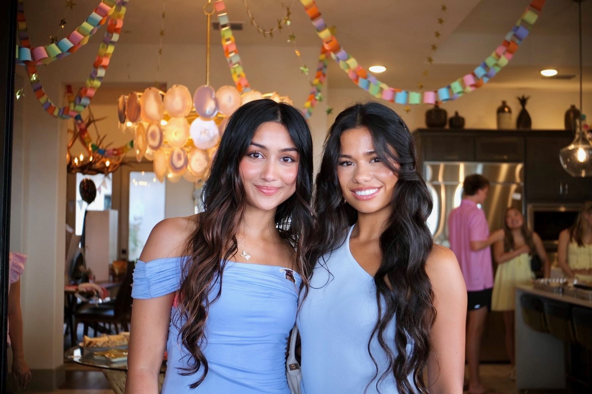

The Imagination Project is a Texas nonprofit teaching young people to think for themselves, learn from real sources, and meet a world full of artificial intelligence with judgment and imagination of their own.
We build critical thinking in elementary, middle, and high school students through mentorship, real-world experience, and credentialed programming, so the next generation uses technology as a tool and never as a crutch.
We imagine intelligently disobedient young leaders whose capacity to reason and create cannot be automated, who carry that power into every field, and who use it to build a more just and imaginative world.
Research keeps linking heavy reliance on generative AI to a measurable drop in critical thinking. Nearly every student now uses these tools alone and without guidance, while classrooms have not caught up. We step into that gap early, and on purpose.
We ask students to sit with hard questions longer than is comfortable, and to enjoy the work of figuring them out.
Our programs put the student's own responsibility, choices, and voice first, every time.
Free multilingual resources and scholarship seats keep the door open wide, because talent is everywhere.
Our work is cross-national and interdisciplinary, so students learn well beyond a single point of view.

"I kept meeting brilliant teenagers who had never once been asked what they actually think. Give a young person a real problem and a room that believes in them, and they will surprise you every single time."
Laika Kalyani Patel founded The Imagination Project in 2025, the same month she was crowned Miss Texas Teen USA. Within four months she had written and delivered the Dear Future Leader curriculum to more than five hundred elementary students across Texas, and the accompanying children's book now funds literacy and hygiene programs for over eight hundred women served by Manav Sadhna in Ahmedabad, India.
She serves as President of Texas DECA and brings experience across business, cultural exchange, service, and the arts. That range is the model at the heart of the organization: global impact through local action, and whole-person capability in every young person we reach.
Laika Kalyani PatelFounder · Yale University

"I wished I had an organization to connect me with educational resources and world leaders when I was younger. Now more than ever, a student's network is everything."
Growing up in a half-Vietnamese and half-Italian household, Anabella Laudicina developed a deep appreciation for tradition. She joined The Imagination Project in 2026, bringing experience across the arts and medicine. She founded a local Leo Club chapter that scaled across Austin, and is now a neuroscience major at Texas A&M.
Anabella LaudicinaFounding Director · Neuroscience, Texas A&M
Imagination is not a luxury.
It is how a child decides who they will become,
how they question what they are handed,
and how they build what does not yet exist.
Protect it, practice it, and it will carry them anywhere.
The Imagination Project
Our core programs serve students ages 4 to 18. High schoolers can also join as volunteer mentors, and adults eighteen and older are welcome as mentors, speakers, and supporters.
Many of our resources are free and available in four languages. For programs with a fee, scholarship seats are reserved for students from under-resourced communities, and livestream access to our events is always free.
Yes. We welcome mentors, speakers, and volunteers, and new mentors are recruited every month. Reach us at contact@theimaginationproject.org to start a conversation.
Educators can deliver our materials in their classrooms, host events, and open The Imagination Project as a club. We provide classroom-ready materials with minimal prep and a responsive point of contact.
Donations of any size help us provide one-on-one mentorship and keep our resources free. You can also subscribe to our Substack, follow our work, and share it.
Every gift funds the mentorship, materials, and events that teach young people to think for themselves.